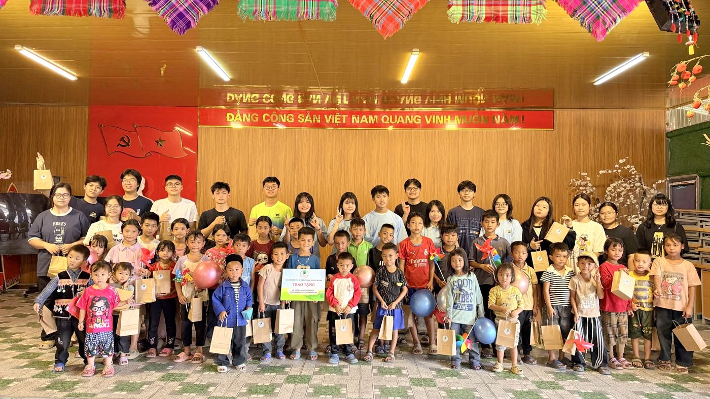
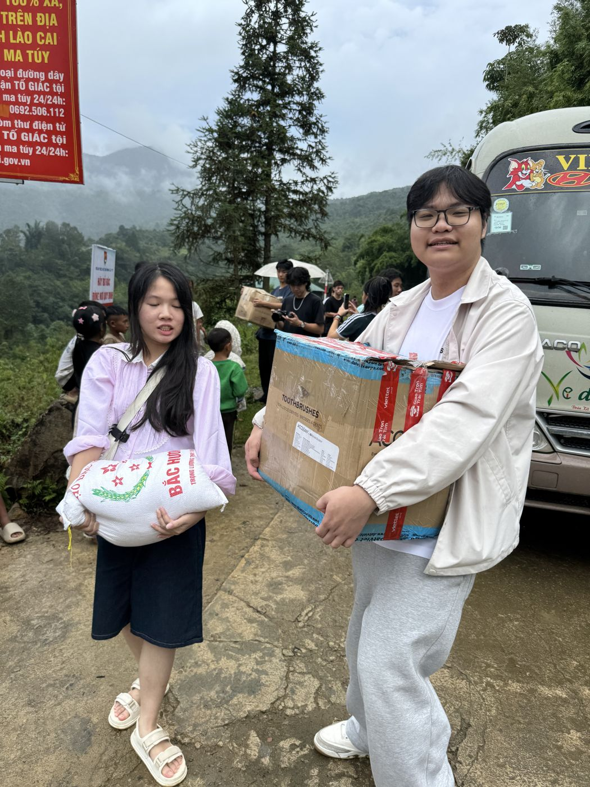
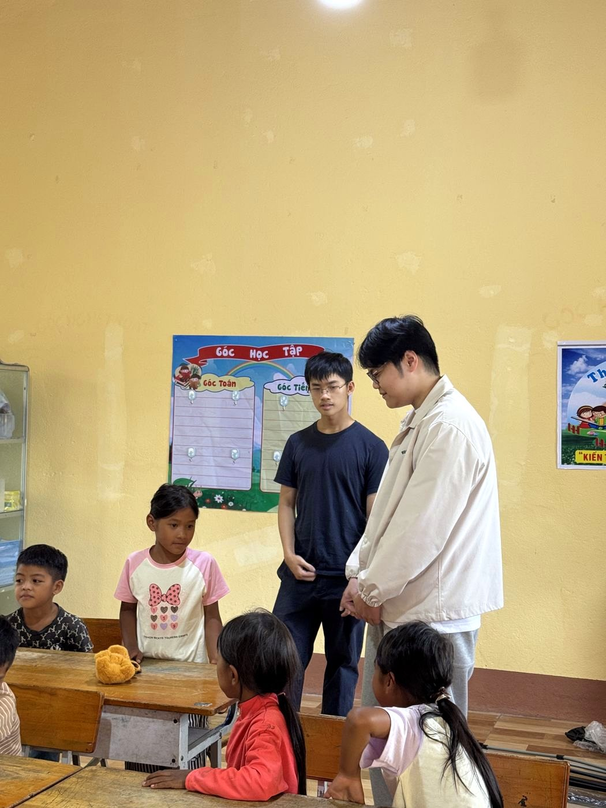
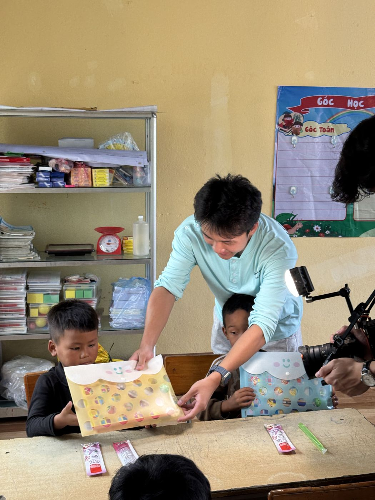
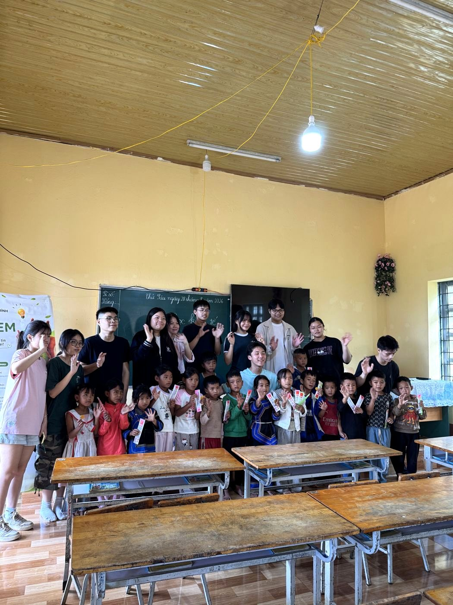
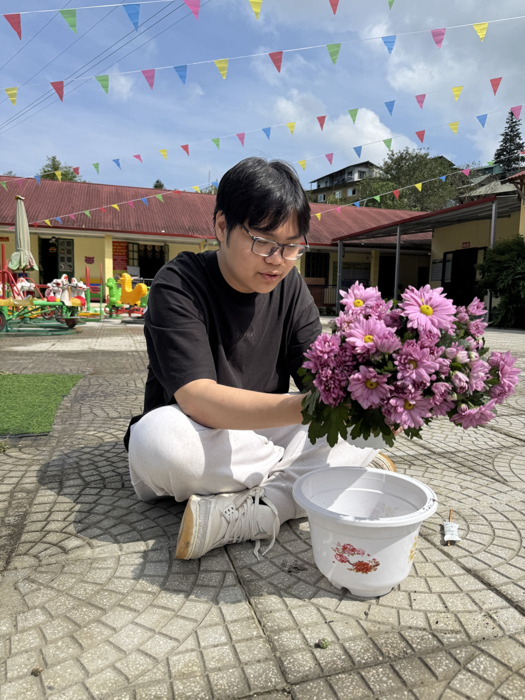
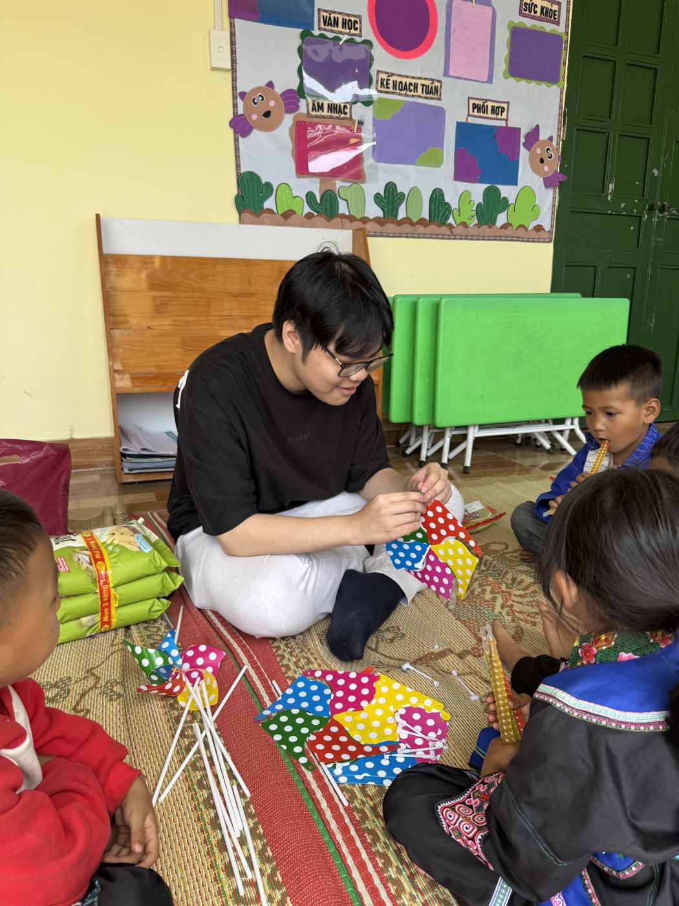
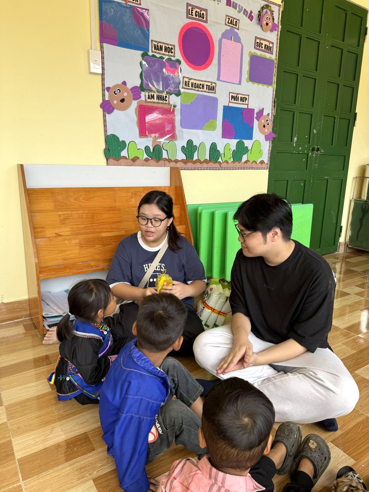
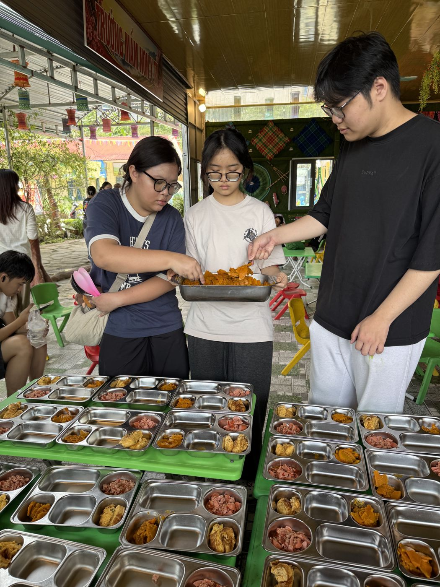

Market Minds
Vice PresidentPhó Chủ nhiệm
Business Analytics · Fintech · CommunityPhân tích kinh doanh · Fintech · Cộng đồng
I use data to understand how people spend, save and give — and I build student projects that turn that understanding into something useful for my community. Mình dùng dữ liệu để hiểu cách mọi người chi tiêu, tiết kiệm và cho đi — và xây dựng các dự án học sinh biến hiểu biết đó thành điều có ích cho cộng đồng.
HUS High School for Gifted Students (THPT Chuyên Khoa học Tự nhiên), Hanoi · Class of 2027 THPT Chuyên Khoa học Tự nhiên, Hà Nội · Khóa tốt nghiệp 2027

Khôi is a student at HUS High School for Gifted Students with a focus on business analytics and fintech. He leads across several student clubs, co-founded two student ventures, and is working through professional data and business courses alongside school. Khôi là học sinh THPT Chuyên Khoa học Tự nhiên, quan tâm đến phân tích kinh doanh và fintech. Khôi giữ vai trò lãnh đạo ở nhiều câu lạc bộ học sinh, đồng sáng lập hai dự án khởi nghiệp và song song theo học các khóa chuyên sâu về dữ liệu, kinh doanh.
INOVA CS · in progressđang thực hiện
Khôi began the INOVA CS track with embedded-systems fundamentals — driving a 16x2 LCD from an Arduino over I2C. On September 19, 2026 he set his project direction: helping young people recognise predatory lending and build basic money habits. Khôi bắt đầu chương trình INOVA CS với nền tảng hệ thống nhúng — điều khiển màn hình LCD 16x2 bằng Arduino qua giao thức I2C. Ngày 19/09/2026, Khôi chốt hướng dự án: giúp người trẻ nhận diện cho vay nặng lãi và xây dựng thói quen tài chính cơ bản.
Next: define target users and scope, then build the product.Tiếp theo: xác định người dùng mục tiêu, phạm vi và xây dựng sản phẩm.
Vice PresidentPhó Chủ nhiệm
Head of Research & AnalyticsTrưởng ban Nghiên cứu & Phân tích
Head of Logistics & MarketingTrưởng ban Hậu cần & Truyền thông
Volunteer club — logistics, budget and donation campaigns for community trips.CLB thiện nguyện — hậu cần, ngân sách và chiến dịch quyên góp cho các chuyến đi.
Vice PresidentPhó Chủ nhiệm
Environmental awareness club planning a reforestation-focused season.CLB môi trường, đang lên kế hoạch cho mùa hoạt động về trồng rừng.
Co-founderĐồng sáng lập
Co-founder & Head of MarketingĐồng sáng lập & Trưởng ban Marketing
A charity-fundraising bakery run by high schoolers — students learn creative thinking, business and teamwork by operating a real business, and profits go to charity.Tiệm bánh gây quỹ từ thiện do học sinh THPT vận hành — học sinh rèn tư duy sáng tạo, kinh doanh và làm việc nhóm qua một mô hình kinh doanh thật, lợi nhuận dành cho từ thiện.
Co-founderĐồng sáng lập
A financial handbook for children — the same mission that drives his INOVA CS project: making money skills accessible to young people.Cuốn sổ tay tài chính cho trẻ em — cùng sứ mệnh với dự án INOVA CS: giúp người trẻ tiếp cận kỹ năng tài chính.
Kindle · Lào Cai · 29–30/08/2026
A two-day trip organised through Kindle, where Khôi heads logistics and marketing. The team brought donated supplies to schools in a mountain district of Lào Cai, ran classroom activities, and spent a full day with the kindergarten children — planting flowers, crafting pinwheels, and cooking and serving their lunch.Chuyến đi hai ngày do CLB Kindle tổ chức, nơi Khôi phụ trách hậu cần và truyền thông. Đoàn mang đồ quyên góp đến các điểm trường vùng cao Lào Cai, tổ chức hoạt động trên lớp và dành trọn một ngày với các bé mầm non — trồng hoa, làm chong chóng, nấu và chia cơm trưa.











Certificate of participation.Chứng nhận tham gia.
International invention & innovation exhibition — preparing through the INOVA CS track.Triển lãm sáng chế & đổi mới sáng tạo quốc tế — đang chuẩn bị qua chương trình INOVA CS.
Examines how environmental, social and governance performance relates to profitability among Vietnamese agricultural companies, using panel data and predictive models. A link will be added once the paper is finalised.Nghiên cứu mối liên hệ giữa hiệu quả ESG (môi trường, xã hội, quản trị) và khả năng sinh lời của doanh nghiệp nông nghiệp Việt Nam, sử dụng dữ liệu bảng và mô hình dự báo. Đường dẫn sẽ được cập nhật khi bài hoàn thiện.
{kind=link}
{kind=link}
{kind=link}
{kind=link}
{kind=link}
{kind=link}
{kind=link}
{kind=link}
{kind=link}